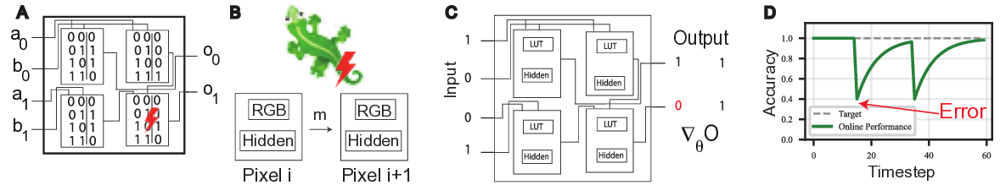
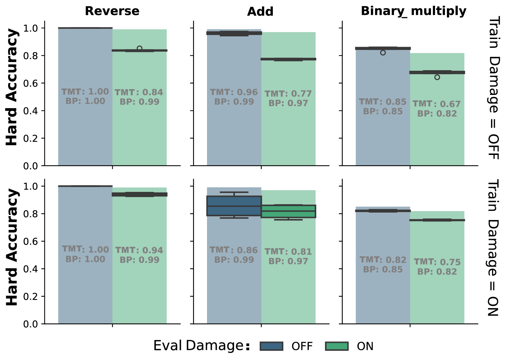
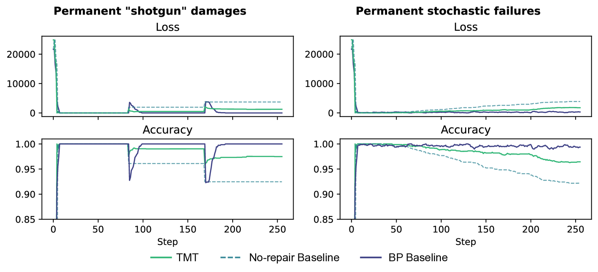
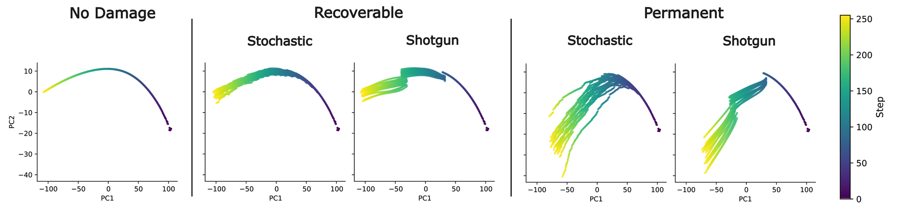
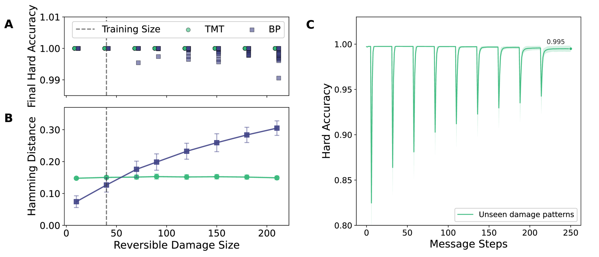
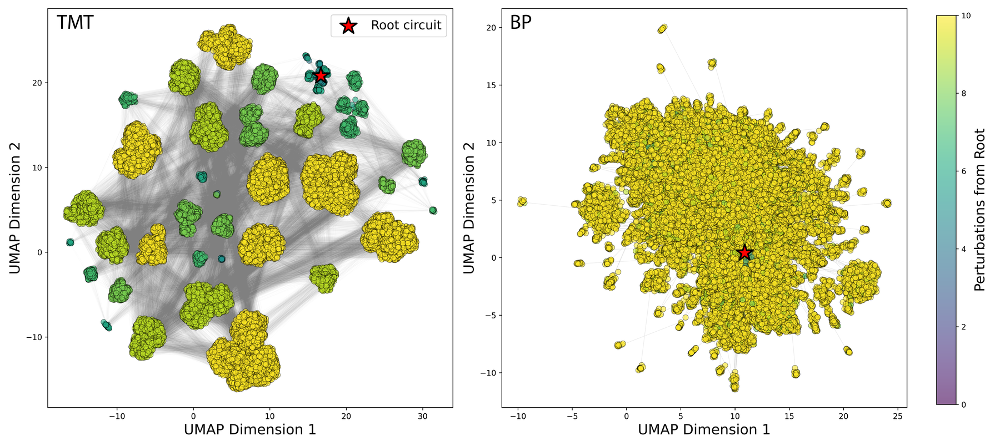
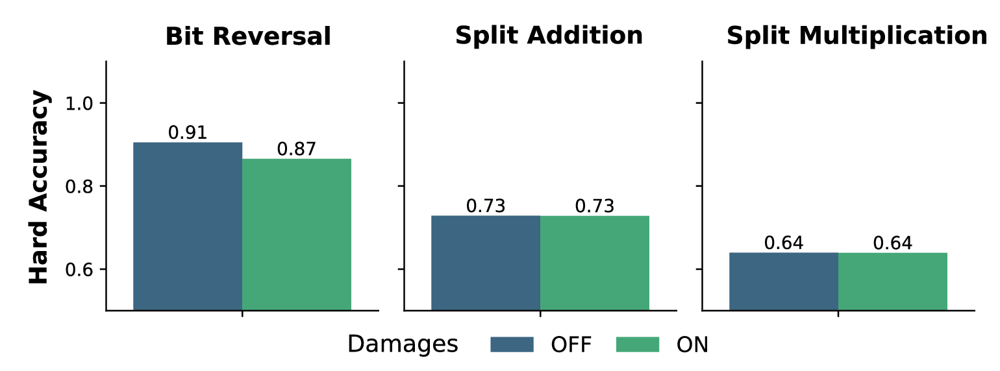
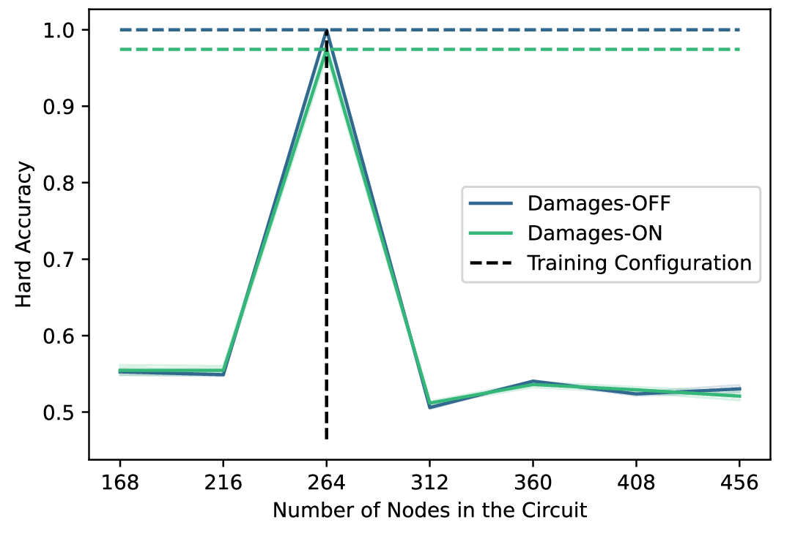
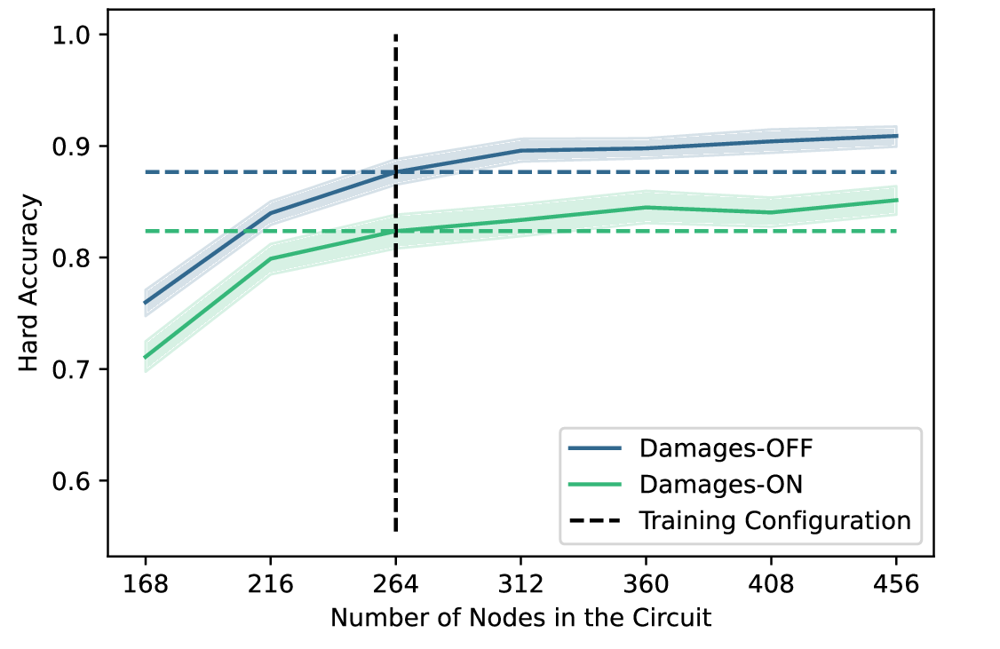

1IT University of Copenhagen · 2Imperial College London · 3Google, Paradigms of Intelligence Team
* Denotes equal contribution.
Fault tolerance in classical computing has traditionally relied on static strategies like hardware redundancy and error-correcting codes. Biological systems, in contrast, exhibit adaptive plasticity, maintaining function through dynamic re-organisation around damage. Inspired by this principle, we introduce Self-Organising Digital Circuits, framing functional logic generation and maintenance as a meta-learning problem on graphs. Our architecture employs a topology-masked Transformer that configures the Lookup Tables (LUT) of a circuit's Boolean gates. Extending the pattern-generation paradigm of Neural Cellular Automata (NCA), it navigates the degenerate Boolean search space to satisfy a computational task, rather than regenerating a fixed target state. We demonstrate that it can self-assemble functional circuits from scratch and rapidly re-route logic around permanent, previously unseen hardware faults. For soft errors, the policy achieves near-perfect recovery (>99.99% accuracy) from damage sizes far exceeding training conditions. We further observe generalisation across circuit scales: accuracy improves on graphs substantially wider than those seen during training. This work bridges the principles of biological self-organisation with the practical domain of digital hardware.
Robustness is a central tenet of modern informatics. Modern systems are capable of impressive fault tolerance, using mechanisms such as Error Correcting Codes (ECC), modular redundancy, and sophisticated fallback protocols to ensure graceful degradation [1][2]. However, these engineered successes typically rely on anticipation: resources are pre-allocated and failure modes are modeled in advance. When a system encounters damage that exceeds its redundancy budget or defies its failure model, it often fails brittly.

Biological intelligence offers a complementary paradigm: adaptive plasticity. Natural automata, such as the mammalian cortex, do not rely solely on static backups. Instead, they maintain function by dynamically re-purposing surviving components to compensate for injury, a phenomenon known as cortical remapping [4]. This form of resilience is not pre-programmed but emergent, enabled by the degeneracy of biological networks: the availability of structurally distinct yet functionally equivalent pathways [5].
Inspired by these biological principles, and by von Neumann's early postulate that systems should "operate across errors" [6], we aim to provide digital hardware with similar capabilities. As emphasised by Woods et al. [2], true hardware autonomy is essential for remote deployments such as deep-space missions out of contact with Earth. This requires moving beyond simple redundancy toward organism-like self-healing, where a collective maintains function despite the loss of individual components. However, in current reconfigurable computing systems like Field-Programmable Gate Arrays (FPGAs), this error mitigation is limited by the 'reconfiguration penalty': the overhead of globally monitoring faults and remapping logic [2].
To address this, we introduce a framework for self-organising digital circuits that replaces global, supervised reconfiguration with a decentralised local policy. We extend the Neural Cellular Automata (NCA) paradigm from pattern formation to functional logic generation. In an NCA, simple agents communicate only with their local neighbours, yet collectively produce globally coordinated behaviour. We apply this principle to a substrate of programmable logic gates, where each agent corresponds to a gate whose truth table is a differentiable parameter. When a gate fails, either due to being reversibly corrupted or permanently damaged, the circuit must be reconfigured. The goal of reconfiguration is to recover the original input-output function (Figure 1).
Our architecture is meta-learned in two phases. The local update rule is trained offline via backpropagation through time, exploiting the differentiability of the continuous LUT relaxation. Once trained, it optimises circuits using only local forward passes, so the expensive global optimisation is paid once and the resulting policy can assemble and repair circuits without differentiable hardware components [7].
Evolvable Hardware. Evolvable hardware (EHW) applies evolutionary algorithms to discover or repair circuit configurations on reconfigurable substrates such as FPGAs [8][9]. EHW has demonstrated circuit evolution and online fault recovery, sharing our core objective of autonomous hardware adaptation. However, evolutionary search incurs its full computational cost for each individual circuit: chromosome lengths grow with circuit complexity, and the resulting search spaces demand substantial resources even for moderately sized designs [10]. Our framework addresses this by amortising the cost of optimisation across all circuits seen during training, replacing stochastic population-based search with a single deterministic forward pass at deployment time.
From Pattern Formation to Functional Substrates. Neural Cellular Automata (NCA) parameterise local update rules with neural networks, enabling self-organising pattern formation on grids [3]. Recent extensions have generalised NCAs to arbitrary graph topologies [11] and to dynamic computational tasks [12], but the automaton's state always remains the data itself. We propose a fundamental shift: viewing the cellular state as the functional substrate that processes data. Each cell becomes a programmable logic gate whose truth table is optimised by a learned local policy, rendering the circuit a self-organising system. Because the gates converge to discrete Boolean logic, the resulting circuits remain amenable to formal verification [13]. Concurrently, Miotti et al. [14] use differentiable logic gates to parameterise NCA update rules for hardware-native implementations; our goal is orthogonal, as we use an NCA-like model to optimise the gates themselves.
Attention-Based Local Policies. Graph Attention Networks [15] introduced learnable, content-dependent message weighting on graphs. Subsequent Graph Transformer architectures augment attention with structural encodings and edge features [16]. Our approach is deliberately more minimal: we apply a single shared-weight Transformer block whose attention is restricted to wired neighbours via a binary topology mask, with no additional structural encoding. Applied recurrently, this topology-masked Transformer (TMT) internalises a local search policy that replaces explicit global optimisers, connecting to recent work on meta-trained in-context learners [17][18].
We model a digital circuit as a Directed Acyclic Graph (DAG) of programmable Look-Up Tables (LUTs) connected by fixed wires (see Figure 1A). The circuit receives a global binary input $\mathbf{x} \in \{0,1\}^{N_{in}}$ and produces an output $\hat{\mathbf{y}} \in \{0,1\}^{N_{out}}$. Each gate has arity $k$ and is parameterised by a LUT of $2^k$ entries that fully specify its Boolean function. Wires are integer indices selecting bits from the previous layer's outputs, allowing arbitrary connectivity and fan-out. Gates are arranged in feed-forward layers; for our 12-bit tasks with $k=4$, this yields a three-hidden-layer architecture of sizes $(96, 96, 48)$.
During deployment, two categories of hardware fault may corrupt a gate's LUT: (i) Recoverable (soft) errors, which flip LUT entries but can be overwritten, and (ii) Permanent (stuck-at) faults, which clamp a gate's output irreversibly. Given a target Boolean function $f$, the goal is to learn a decentralised local policy that configures the LUTs such that $\hat{\mathbf{y}} = f(\mathbf{x})$, and that can autonomously restore this mapping after previously unseen faults, without global supervision or backpropagation at deployment time.
Circuits are initialised as noisy "soft wires": each gate's LUT acts as an identity pass-through on one of its inputs (assigned round-robin), with small additive noise to break symmetry.
To apply self-organising principles, we lift the circuit into a graph $\mathcal{G} = (\mathcal{V}, \mathcal{E})$ where each node $v_i$ corresponds to a gate or input pin (Figure 1C). We then learn a local message-passing policy that discovers communication protocols to satisfy the target logic.
Node State. Each node carries a state vector:
$$\mathbf{s}_i = [\boldsymbol{\ell}_i, \mathbf{m}_i, \mathbf{p}_i].$$The LUT logits $\boldsymbol{\ell}_i \in \mathbb{R}^{2^k}$ defining the gate's logic, a latent memory $\mathbf{m}_i \in \mathbb{R}^{d_{hidden}}$ ($d_{hidden}=64$) for recurrent state, and a sinusoidal positional encoding $\mathbf{p}_i$ of the normalised depth $d_i/D$, which is invariant to circuit scale. Optionally, a scalar feedback signal $r_i$ (described below) is appended, yielding $\mathbf{s}_i = [\boldsymbol{\ell}_i, \mathbf{m}_i, \mathbf{p}_i, r_i]$.
Connectivity. The graph topology mirrors the circuit wiring. In the random-topology regime, connections are generated by randomly permuting previous-layer output indices, ensuring uniform fan-out while preserving the DAG structure. We enforce bidirectional edges: every forward wire $A \rightarrow B$ implies a backward message-passing edge $B \rightarrow A$.
Update Rule. We parameterise the update rule as a single-block Transformer operating on the $N$ gate tokens simultaneously. We write $\hat{\mathbf{M}}$ for a layer-normalised [19] matrix $\mathbf{M}$. The node states $\mathbf{S}$ are projected into a latent space ($d_{attn}=128$):
$$\mathbf{Z}^{(0)} = \hat{\mathbf{S}}\, W_{in}^T \in \mathbb{R}^{N \times d_{attn}}$$A single attention block, whose attention is restricted to wired neighbours via a binary topology mask $M \in \{0,1\}^{N \times N}$, refines the latents. We adopt Pre-LN normalisation [20] with separate LayerNorms for queries and keys/values, and QK-normalisation [21] to stabilise attention logits across recurrent steps. Residual branches are gated via ReZero [22]: learned scalars $\alpha$ initialised at zero so that the block initially acts as an identity:
$$\mathbf{Z}' = \mathbf{Z}^{(0)} + \alpha_{\text{attn}} \cdot \text{MSA}\!\left(\hat{\mathbf{Z}}^{(0)},\; \hat{\mathbf{Z}}^{(0)},\; M\right)$$ $$\mathbf{Z}_{out} = \mathbf{Z}' + \alpha_{\text{ffn}} \cdot \text{MLP}\!\left(\hat{\mathbf{Z}}'\right)$$The two-layer MLP (with GeLU activation) acts independently per node; all cross-node communication is confined to the masked attention step. Output latents are decoded into residual parameter updates via $\alpha$-gated linear heads:
$$\Delta \boldsymbol{\ell}_i = \alpha_{\ell} \cdot \hat{\mathbf{Z}}_{out,i}\, W_{\ell}^T, \qquad \Delta \mathbf{m}_i = \alpha_{m} \cdot \hat{\mathbf{Z}}_{out,i}\, W_{m}^T$$Positional encodings $\mathbf{p}_i$ remain static; the error feedback $r_i$ is dynamically recomputed at every step. The updates are applied residually ($\mathbf{s}_i^{(t+1)} = \mathbf{s}_i^{(t)} + \Delta\mathbf{s}_i^{(t)}$) by applying this single shared-weight block recurrently for $T$ steps, forming a $T$-layer weight-tied residual network whose expressivity comes through iterated refinement. The topology mask imposes a strict "speed of light": information propagates at most one hop per step, so global coordination emerges from iterated local interactions, faithful to the NCA paradigm.

Per-Node Error Feedback. For fixed-wiring experiments the architecture above suffices; for random wirings, we found explicit error signals essential. Each output gate receives a scalar $r_i$: the mean absolute residual over a task batch:
$$r_i = \frac{1}{|\mathcal{D}|}\sum_{(\mathbf{x}, \mathbf{y}) \in \mathcal{D}} |y_i - \hat{y}_i(\mathbf{x})|$$Non-output gates receive $r_i = 0$. This signal propagates upstream through recurrent attention, enabling interior gates to adjust in response to downstream error, forming a decentralised credit assignment.
Scale-Free Architecture. Because the Transformer operates at the node level with shared weights, its parameters are independent of circuit size: the same update rule applies to 20 or 200 gates, 3 or 10 layers. Only the topology mask $M$ must be recomputed from the wiring. Combined with normalised positional encodings, this endows the architecture with scale-freedom: a trained policy can, in principle, be deployed on circuits of different size without retraining.
Differentiable Circuit Execution. To train the update rule via backpropagation, we require gradients through the circuit's Boolean logic. Following the differentiable logic gate network (DLGN) paradigm [23], we achieve this through a continuous relaxation: binary signals are represented as probabilities $x \in [0,1]$, and each gate's $2^k$ LUT logits are passed through a sigmoid. Unlike the categorical relaxation of DLGNs, which learns a softmax distribution over the 16 fixed two-input Boolean functions, our formulation directly parameterises the continuous LUT entries. The soft gate output is then computed as a multilinear interpolation of the LUT at the input point $\mathbf{x}$: each input probability recursively selects between halves of the table, mixing the two branches proportionally. For a 2-input gate with inputs $(x_1, x_2)$, this reduces to bilinear interpolation over the four LUT entries. This interpolation is fully differentiable, and since each LUT entry influences multiple input combinations, gradients flow through the entire function. At inference, rounding to $\{0,1\}$ recovers discrete Boolean logic.
Pool-Based Meta-Learning. We frame the circuit optimisation problem as a dynamic system trained via Backpropagation Through Time (BPTT). This is meta-learning in the sense of Andrychowicz et al. [24]: the TMT is trained to produce parameters for a separate computation (the circuit), with the outer objective being that computation's task loss, a two-level structure absent in standard NCAs, where the cell state is the target output.
As a baseline, we compare against standard Backpropagation (BP) applied directly to the differentiable LUTs, which serves as an upper bound on circuit performance. Following [3], we maintain a persistent graph Pool $\mathcal{P} = \{ \mathcal{G}_1, \dots, \mathcal{G}_K \}$. Circuits are periodically reset to unoptimised states (average lifespan of 128 steps) to enforce a dual curriculum: constant injection of fresh circuits demands rapid self-assembly, while surviving circuits enforce long-term homeostasis under damage injections.
Inner Loop (Inference): At each training step, a batch of circuits and Boolean input–output pairs $(\mathbf{X}_{train}, \mathbf{Y}_{train})$ are sampled. The TMT is applied iteratively for $T$ steps via a differentiable scan. Crucially, the circuit is functionally executed at every tick $t$: updated LUT logits are extracted, the circuit processes the input data, and resulting per-node residuals $r_i$ are written back into the graph state. This creates a closed real-time feedback loop. To balance recurrent expressivity with the computational constraints of scaling batch size and model capacity, we truncate the BPTT horizon to $T=5$.
Outer Loop (Optimisation): Following the $T$-step scan, the circuit loss $\mathcal{L}$ (Binary Cross Entropy) is computed against $\mathbf{Y}_{train}$. We support both fixed evaluation at the final step ($t^{*} = T$) and stochastic evaluation ($t^{*} \sim \mathcal{U}(T_{\min}, T)$) to capture varying gradient depths and enable curriculum scheduling. Gradients of $\mathcal{L}$ with respect to the TMT parameters are computed via BPTT through both the recurrent message-passing and the functional circuit execution, followed by an Adam [25] update.
Boolean Tasks. We evaluate on three 12-bit tasks (4,096 input–output pairs; 256 held out for testing). Split Multiplication: two 6-bit integers are multiplied, occupying the full 12-bit output. Split Addition: two 6-bit integers are added (7-bit result, 5 bits zero-padded). Bit Reversal: the input array is reversed, mapping bit $i$ to position $11-i$.
We first establish that the local TMT policy can grow functional circuits from unoptimised "soft wires" and maintain them indefinitely. To ensure the policy learns the underlying generative function rather than memorising training patterns, all reported accuracies are computed strictly on a held-out test split of 256 unseen inputs.

As shown in Figure 2 (Top Row, Blue), the TMT policy converges across all tasks without damage, achieving performance virtually identical to the global Backpropagation (BP) baseline. It achieves perfect accuracy on Bit Reversal and mean accuracies of 0.96 and 0.84 on Split Addition and Multiplication, respectively.
To evaluate fault tolerance, we introduce stochastic damage (clamping 20% of gates to zero). When exposed to damage out-of-distribution (Zero-Shot Resilience, Figure 2 Top Row, Green), the TMT retains partial functionality, indicating inherent robustness in the distributed representation. When trained with active damage (Learned Resilience, Bottom Row), performance under damage approaches the BP baseline, demonstrating adaptive robustness, albeit with a slight degradation in the damage-free ceiling due to the noisy training environment.
Targeted catastrophic events introduce simultaneous destruction of 10% of its gates, termed "shotgun" in Figure 3. The TMT actively recovers and stabilises at $\approx 0.97$ accuracy, vastly outperforming a passive (no-repair) baseline. While global BP (upper bound) recovers more fully, the TMT's decentralised repair minimises the initial impact drop.
Principal Component Analysis (PCA) of the optimisation trajectories (Figure 4) reveals the mechanism of this resilience: under recoverable damage, the TMT does not rewind to a memorised canonical state. Instead, it dynamically re-routes, fanning out into functionally equivalent but structurally distinct local minima.

To focus on practical considerations, we remove the need to discover functioning circuits and test the TMT purely as a maintenance mechanism on circuits preconfigured to perfect accuracy by BP.
We restrict ourselves to reversible perturbations, modelling the radiation-induced soft errors that dominate over hard faults in aerospace-grade SRAM-based FPGAs [26]. Figure 5(A–B) compares TMT and BP performance upon damage recovery to convergence (26 message steps and 300 gradient steps, respectively). For TMT, it demonstrates perfect out-of-distribution recovery for "shotgun" damage sizes far exceeding training parameters. This generalisation highlights the model's relevance for radiation-induced error scenarios. Hamming distances reveal a "signature edit" fraction independent of perturbation size.

To further stress-test the system, we introduce successive "shotgun" failures of 40 gates at once (17%). Figure 5C demonstrates recovery on the addition task following multiple damage events. BP is omitted because message-passing and gradient steps are not directly comparable per-step; a compute-matched comparison is outside the scope of this work.
Solution Degeneracy. To map the degenerate solution space of these self-healing circuits (Figure 6), we employ a recursive Depth-First Search (DFS) exploration strategy. Starting from a preconfigured circuit with perfect accuracy on the binary addition task (8 inputs/outputs, yielding a 2560-dimensional LUT vector), we apply a 40-gate recoverable perturbation. Because the damage is not permanent, the exact pre-damage state is theoretically recoverable. However, the system consistently finds alternate, functionally equivalent solutions (perfect accuracy).

By treating each recovered circuit as a new seed for subsequent perturbations, we generate a recursive tree of trajectories (search depth of 10, branching factor of 4). We apply this procedure identically to the TMT policy and a standard BP baseline, visualising the resulting 2560-dimensional configuration space via UMAP (Euclidean distance, $n_{\text{neighbors}}=15$, $\text{min\_dist}=0.1$), where Euclidean distance preserves the neighbourhood ranking of Hamming distance for binary vectors.
The TMT policy organises recovered solutions into discrete functional archetypes. The sparse connectivity between these clusters suggests a neutral landscape: multiple successive perturbations force the system to traverse fitness valleys, landing in entirely different structural arrangements that maintain identical global functionality. This reveals an ergodic, degenerate solution space.
We compare this with recovery via direct BP on the circuits. This produces a single cluster centered on the root configuration, exploring more incremental deformations rather than traversing between distinct structural basins.
The most challenging setting removes the architectural constraints entirely. We transition to a Random Topology regime, where every circuit in the pool possesses a unique, randomly generated wiring diagram. Consequently, the meta-learner cannot overfit to "Gate A connected to Gate B." Instead, it must learn a truly topological, wiring-agnostic policy.

We find this learning regime to be significantly harder than Fixed Topology training. We successfully learned a high-performing, topology-agnostic policy for the Bit Reversal task, achieving good generalisation to unseen random graphs. However, for the arithmetic tasks (Addition and Multiplication), the policy struggles to fully converge. While it learns to approximate the output distribution, capturing coarse statistical patterns of the target function, it lacks the precision required for exact arithmetic operations.
In this specific regime, standard BP (which is inherently topology-agnostic via re-training) still holds the advantage. However, the success on the Bit Reversal task provides a proof-of-principle that the TMT can learn generalisable routing algorithms. We display random-wiring training results in Figure 7.
Finally, we leverage the decentralised nature of our architecture to explore its scaling capabilities. Theoretically, because the TMT shares weights across all nodes and operates on local neighbourhoods, the learned update rule should be independent of the circuit size. We investigate this "Scale-Free" hypothesis by deploying a trained TMT policy on circuits significantly larger (or smaller) than those seen during training.


The results reveal that scale-freedom is not just an architectural feature, but rather a learned capability.
Overfitting Size (Fixed Training): When the TMT is trained on a fixed topology (Figure 8a), it overfits the specific scale of the training graph. Performance peaks exactly at the training size ($N=264$, vertical dashed line) and collapses for larger or smaller circuits.
Emergent Scalability (Random Training): In contrast, when trained on the curriculum of random topologies (Figure 8b), the policy generalises remarkably. Not only does it maintain function on larger circuits, but accuracy actually increases as we expand the width of the circuit (from 264 to 450+ nodes). The local policy is able to utilise the additional latent capacity of the wider layers to route signals more effectively, despite never having encountered graphs of this size during training.
We note that this scaling success is currently limited to circuit width. Scaling depth remains a challenge, likely because our positional encoding (normalised depth fraction) changes resolution as layers are added, disrupting the policy's depth perception. Nevertheless, the ability to train on more small, cheap circuits and successfully deploy on wider architectures is a potent validation of the TMT's "growth" paradigm.
We have presented a framework that extends the NCA paradigm from grid-based pattern formation to functional logic generation on arbitrary graphs. By replacing global backpropagation with a decentralised, topology-masked Transformer, we demonstrated that digital circuits can autonomously self-assemble, self-repair, and generalise their routing policies across varying structural scales. For soft errors, the learned policy recovers perfectly even at damage scales several times beyond training, indicating a general repair strategy rather than memorisation of specific failure patterns.
Under such reversible damage, where the system could theoretically return to its exact prior state, the policy drives the circuit toward new, functionally equivalent local minima. This indicates that the meta-learner prioritises functional homeostasis over fixed structural targets.
This use of degenerate solutions mirrors biological multiscale competency [27], where evolved systems maintain robust homeostasis under noisy, uncertain conditions by dynamically switching between structurally distinct but functionally equivalent pathways (e.g. aerobic vs. anaerobic metabolic pathways [5]).
While current industrial FPGA applications typically require deterministic logic configurations, the capacity of the TMT to harness structural degeneracy, showcasing strong generalisation behaviour, holds promise for autonomous systems facing unpredictable hardware failures in remote environments.
Despite these capabilities, several limitations present immediate avenues for future work. First, our current positional encoding captures only vertical depth within the circuit DAG, stripping the policy of local topological context. Incorporating Random Walk Structural Encodings (RWSE) [28], Laplacian eigenvectors [29], or functional metrics like fan-out centrality would provide the meta-learner with richer structural maps while preserving the architecture's scale-freedom.
Second, the per-node error feedback $r_i$ is a coarse scalar residual. The meta-learner remains blind to the actual task data; augmenting the architecture with cross-attention to input-output pairs, akin to Perceiver IO [30], could enable genuine, data-informed in-context reasoning.
Finally, while the circuit's physical connectivity is inherently sparse ($<3\%$ density), the topology mask currently operates as a dense $N \times N$ matrix. Implementing native sparse attention is computationally critical to scale this framework to circuits containing thousands of gates.
The true significance of this work lies beyond the Boolean domain on which we have validated it. What distinguishes it from prior self-organising models is that the decentralised policy operates on a substrate that itself computes. The topology mask defines the physical wiring, while the learned attention policy governs the functional interactions between connected nodes. These two levels, structural connectivity and dynamic coupling, are independently addressable: one can remain fixed while the other adapts, or both can evolve on separate timescales. This dissociation is absent in conventional neural networks, where structure and function are collapsed into a single weight matrix.
The separation naturally suggests a richer architecture in which the same shared-weight mechanism first grows a sparse structural scaffold, then governs the functional dynamics within it, with no hard boundary between the two phases. Realising this structural half, endowing the TMT with the ability to add, prune, and rewire, remains the central open challenge.
By embracing adaptive plasticity over prescriptive redundancy, this work forms the basis for computational substrates that grow, learn, and heal themselves.
We thank Nicolas Bessone, Ismail Ceylan, Matthias Dellago, Benedikt Hartl, Kathrin Korte, Milton Montero, Elias Najarro, Joachim W. Pedersen, Fernando Rosas, and Florian Scheidl for fruitful and inspiring discussions.
Funded by the European Union (ERC, GROW-AI, 101045094). Views and opinions expressed are however those of the authors only and do not necessarily reflect those of the European Union or the European Research Council. Neither the European Union nor the granting authority can be held responsible for them.
@misc{barylli2026sodc,
title = {Self-Organising Digital Circuits},
author = {Barylli, Marcello and B\'{e}na, Gabriel and Mordvintsev, Alexander
and Nisioti, Eleni and Risi, Sebastian},
year = {2026},
url = {https://marcellobarylli.github.io/papers/self-organising-digital-circuits/}
}